Writing · · 7 min read
t3-fleet-gateway: A Unified MCP Gateway for T3 Code, Driven by Grok Bot
A small always-on MCP gateway that lets Grok Bot run coding jobs on the T3 Code servers on my machines, one long-lived thread per project.
A theme proposal for bounds.dev · second pass
One person and some bots are typing
Move the pointer across the hero: the title shows a different side and Chomp turns to follow. Cards and sprites below do the same; on a phone, tap a sprite in the cast. Scroll and Chomp crosses the track in the header, eating each pellet as his mouth reaches it; scroll back and they return. Pause (top right) stops every loop, effect and tilt; the same happens on its own when your system asks for reduced motion.
Arcade is one theme, offered next to the site's light and dark; green and amber go away. The colors are the first pass's hues with about a third of the saturation taken out: butter, apricot, rose, sage and a dusty aqua on a blue-black. Ratios are measured in your browser; body and UI text needs 4.5:1.
One pixel face, drawn fine enough to read as lettering instead of blocks, and the current reading face for everything you actually read.
Jersey 25 · titles, headings, nav, buttons, scores · 18 px and up · 20.9 KB
HIGH SCORE 004200
Notion as Mission Control for My T3 Code Fleet
All writing · Insert coin · Code, Calm, Cast · ~/photos
Iosevka Aile 17/1.7 · long-form reading · already on the site, no new bytes
The arcade stays in the margins. Inside a post there is one reading face, one accent color and nothing that moves on its own, so a 2,000-word write-up reads the way it does today.
Iosevka · code, dates, meta, and every label under 18 px · already on the site
2026-10-08 · 6 min · make check && hugo --cleanDestinationDir
Cut after the first pass: Press Start 2P (an 8-row grid: the low resolution you noticed) and Pixelify Sans (its C reads as O)
HIGH SCORE 004200
Mission Control for My T3 Code Fleet
Eighteen original sprites, redrawn at about two and a half times the resolution of the first pass, with a lit rim and a shaded rim. The whole set is one SVG symbol sheet. Each has a side: hover a tile and the sprite turns to show it; on a phone, tap. The invaders are the site's bots. Chomp is the site's block cursor, grown hungry. The chasers are bugs.
The same pieces the site has now, reskinned: the newest post, the listing, and a post's reading column.

Writing · · 7 min read
A small always-on MCP gateway that lets Grok Bot run coding jobs on the T3 Code servers on my machines, one long-lived thread per project.
The legacy hero on the left is the real one, unedited: old art keeps its own palette and gets a bezel. Hover the card to tilt it; hover or tab through the rows.
This is the post body: 17 px Iosevka Aile on the plain page color, 66 characters wide. Links keep the text color and carry a channel-colored underline, inline code sits in a well, and nothing in this column animates unless you ask it to.
The arcade goes around the article, never through it.
# the same checks as today, still green
make check
make test PYTHON_BIN=/tmp/bounds-contract-tests/bin/python
hugo --cleanDestinationDir # 311 posts, 0 URLs changed| Attribute | Value |
|---|---|
| Camera | iPhone 17 Pro |
| Focal Length | 16.9 mm |
| Aperture | f/2.8 |
| ISO | 32 |
CONTINUE? 9
No page at /posts/this-page/. It moved, or it never existed.
Two kinds of movement. Sprites still swap frames in steps, the way arcade sprites do. Everything else eases and settles with a small overshoot, and turns in depth under the pointer. Each tile replays one move; paused, or under reduced motion, they show their final frame.
Every sprite is a slab seven layers deep, and every card has an edge. At rest the side is a baked shadow that costs nothing. Under the pointer, or on a tap, the real layers are built and the thing turns up to about 30 degrees; a wide card turns 3.5, a small tile 9. Nothing turns in the reading column, and nothing turns when motion is paused or reduced.
Home hero, first view of a session. A line, then the picture opens. 620 ms, once.
Between pages. Six bars close and open in steps. 900 ms here; 240 ms on real navigation.
Post and photo counts tick up when they scroll into view. 700 ms, eased out, final value in the markup.
The footer's way into the arcade. The coin tips, drops and the credit ticks.
Runs along the top of the footer. Four bugs chase Chomp across; off screen it finds a power pellet and chases them back. An 18-second loop that pauses off screen and stops when motion is paused or reduced.
Hidden extra: type the old cheat code, ↑ ↑ ↓ ↓ ← → ← → B A, anywhere on this page.
A minimal prototype of the first game, now on a 400 × 520 screen with the same shaded sprites. Its script loads only when you press Insert coin. Every bot you zap is a post; the feed below the cabinet links to it.
HI 0000
Sound is off until you turn it on. The game pauses when you switch tabs or scroll away.